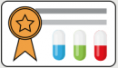

<div class="container">
    <div class="row">
        <div class="text-center">
            <br>
            <h1 class="display-4"><b>¿Quiénes Somos?</b> </h1>
            <p class="lead fst-italic">Somos una centro psicologico que a través de la inmensidad de la psicología como ciencia, nos centramos en variables biológicas, psicológicas y contextuales, encontrando procesos efectivos para brindarte la mejor asesoría posible.</p>
        </div>
        <div class="col-xl-6 col-lg-6 col-md-6 col-sm-12 col-12">
            <br>
            <h3 class="display-7 text-success">Misión</h3>
            <p class="lead"> Ser el mejor apoyo para las familias, trabajando con ética profesional y respeto; brindando valores y calidad humana en un ambiente tranquilo, sano y con proyección personal, para que cada individuo se desarrolle íntegramente; generando así un valor agregado a la sociedad.</p>
            <br>
            <h3 class="display-7 text-success">Visión</h3>
            <p class="lead">Ser un referente en intervenciones psicológicas, para lograr un reconocimiento, que posicione y caracterice nuestros servicios por su eficiencia y eficacia.</p>
            <br>
        </div>
        <div class="m-auto col-xl-6 col-lg-6 col-md-6 col-sm-12 col-12">
            
        </div>
        <div class="col-xl-6 col-lg-6 col-md-6 col-sm-12 col-12">
        </div>
        <div class="text-center">
            <br>
            <h1 class="display-6 text-secondary fst-italic"><b>Diferencias entre Psicologo y Psiquiatra</b> </h1>
            <div class="table-responsive table-layout: fixed">
                <table class="table align-middle ">
                  <thead>
                    <tr>
                      <th class="col-xl-6">Psicologo</th>
                      <th class="col-xl-6">Psiquiatra</th>
                    </tr>
                  </thead>
                  <tbody>
                    <tr>
                      <td class="lead">Puede diagnosticar y tratar un número de trastornos de salud mental, ofreciendo asesoramiento psicologico en terapia individual o de grupo. <br> </td>
                      <td class="lead">Diagnosticar y tratar trastornos de salud mental <br><br> </td>
                    </tr>
                    <tr>
                        <td class="lead">No puede recetar medicación a no se que tenga licencia para hacerlo <br> </td>
                      <td class="lead">Ofrecer asesoramiento psicológico, que también se conoce como psicoterapia <br><br> </td>
                    </tr>
                    <tr>
                        <td class="lead">Puede trabajar con otro profesional que puede recetar la medicación si fuera necesario <br> </td>
                      <td class="lead">Recetar medicinas <br><br> </td>
                    </tr>
                </tbody>
            </table>
          </div>
        </div>
    </div>
</div>
